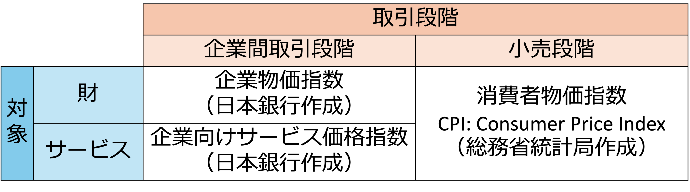
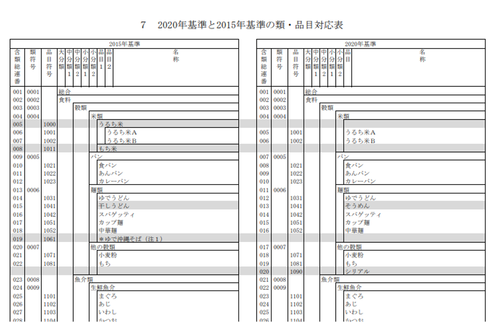
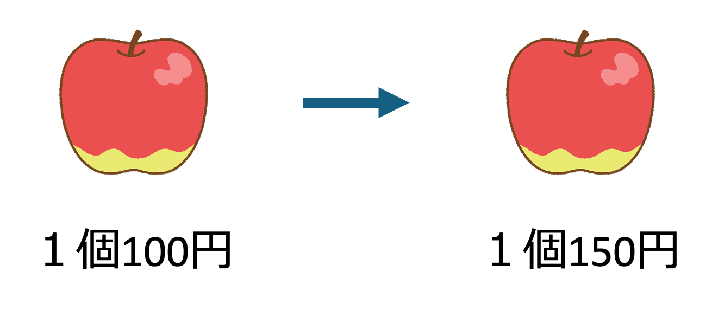

10 物価の計算
10.1 価格変動をどう評価するか
私たちの生活では、価格が上がるもの（インフレ）もあれば下がるもの（デフレ）もあります。これらを総合的に捉え、「経済の体温計」として機能するのが物価指数です。
- 名目額: 実際に支払った金額そのもの。
- 実質額: 物価の変動分を除去し、購買力（モノを買える量）で評価した金額。
10.2 物価指数とは
消費者（家計）が購入する財やサービスの価格変動を総合的に測定する指標です。
消費者物価指数 (CPI)
総務省統計局が作成しています。
小売段階の財及びサービスの物価の動き、すなわち日常生活で私たち消費者が購入する商品の価格の動きを総合して見ようとするもの。
私たちが日常購入する食料品、衣料品、電気製品、化粧品などの財の価格の動きのほかに、家賃、通信料、授業料、理髪料などのようなサービスの価格の動きも含まれる。
総務省統計局が作成しており、歴史は古く、第二次世界大戦直後の1946年に初めて作成され、当時の激しいインフレーションを計測するのに使われた。その後も、消費者物価指数は経済政策を的確に推進する上で極めて重要な指標となり、「経済の体温計」とも呼ばれている。
財のバスケットと加重平均
物価指数は、単なる価格の平均ではなく、家計支出に占める重要度（ウエイト）を加味した加重平均で計算されます。
財のバスケット
10大費目
食料、住居、光熱・水道、家具・家事用品、被服及び履物、保健・医療、交通・通信、教育、教養・娯楽、諸雑費品目
「食料」では、米、パン、野菜、魚介類などのように、さらに細分化される
加重平均（ウエイト）
- 各品目が、家計の消費支出全体に占める割合で定める。
- 食料のウエイトが高ければ、食料価格の変動がCPI全体に与える影響が大きくなる。
バスケットの役割
物価変動を測定する際の基準となるため、その内容が適切であることが重要。
- 世帯の消費支出を代表するようなものが選ばれる。
- 定期的に見直されることで、物価変動の比較可能性が維持される。

日本の物価推移
1994年の総合指数を約96とすると、2020年を100とした基準において、2023年には105.6まで上昇しています。長年のデフレ傾向から、近年は急激なインフレ局面に入っていることがデータから見て取れます。
10.3 物価指数の計算方法
物価指数の基本的な概念は、比較時点の総額 ÷ 基準時点の総額 です。
つまり、1個100円のりんごが150円に変われば、物価指数は150％となります。

物価指数
\[ \frac{\text{比較時点の総額}}{\text{基準時点の総額}}=\frac{150\text{円}}{100\text{円}}=150\% \]
ここで、以下の2つの価格変化を考えます。
- りんごの価格：100円 → 150円（リンゴの価格150％上昇）
- 車の価格：100万円 → 120万円（車の価格120％上昇）
物価指数としては以下の計算で良いでしょうか？
\[ \frac{\text{比較時点の総額}}{\text{基準時点の総額}}=\frac{150\text{円}+120\text{万円}}{100\text{円}+100\text{万円}}=\frac{120\text{万}150\text{円}+}{100\text{万}100\text{円}}\approx120\% \]
これだと、完全に金額の大きな車の価格変動に物価指数が引っ張られてしまいます。そこで、実際の計算では、それぞれの財がどれだけ売れたか、数量を考慮する必要があります。
そして、消費された財の数量は毎年違うため、いつの時点の数量を用いて計算するかによって、2つの代表的な計算方法があります。
（数量を固定して計算しないと、先ほどの例のように、数量が大きく変化した財の価格変化の影響を強く受けてしまいます。）
ラスパイレス指数（Laspeyres Index）
基準時点（過去）の購入数量を固定して計算します。日本のCPI（消費者物価指数）はこの方式を採用しています。
\[I_L = \frac{\sum (P_t \times Q_0)}{\sum (P_0 \times Q_0)} \times 100\]
- \(P_0, Q_0\): 基準時点（去年など）の価格と数量
- \(P_t\): 比較時点（今年など）の価格
メリット: 毎月の販売数量を調査する必要がないため、速報性に優れています。
パーシェ指数（Paasche Index）
比較時点（現在）の購入数量を固定して計算します。GDPデフレーターなどに使われます。
\[I_P = \frac{\sum (P_t \times Q_t)}{\sum (P_0 \times Q_t)} \times 100\]
- \(Q_t\): 比較時点（現在）の数量
10.4 名目値から実質値への変換
- 名目額: 実際に支払った金額そのもの。
- 実質額: 物価の変動分を除去し、購買力（モノを買える量）で評価した金額。
例
- 名目賃金（時給）1,000円 → 1,200円
- 物価 100円 → 150円
- 実質賃金（給料で買える量）10個 → 8個
物価指数を用いることで、異なる時点のお金の価値を比較できるようになります。
\[\text{実質賃金} = \frac{\text{名目値賃金}}{\text{消費者物価指数（ラスパイレス型）}} \times 100\]
実質GDP
\[\text{実質GDP} = \frac{\text{名目GDP}}{\text{GDPデフレーター}} \times 100= \frac{\text{名目GDP}}{\text{パーシェ型物価指数}} \times 100\]
10.5 物価指数の計算（参考リンク）
たかぴーの中小企業診断士試験 攻略チャンネル（←クリックすると音が出ます）
なかのミクマク経済学&一般知能SPI（←クリックすると音が出ます）